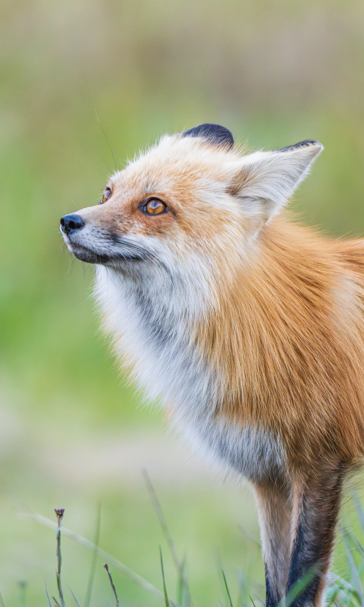
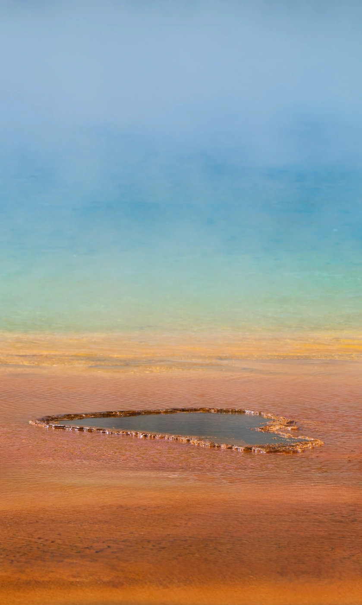
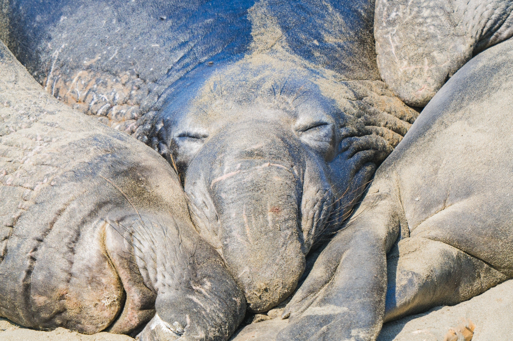
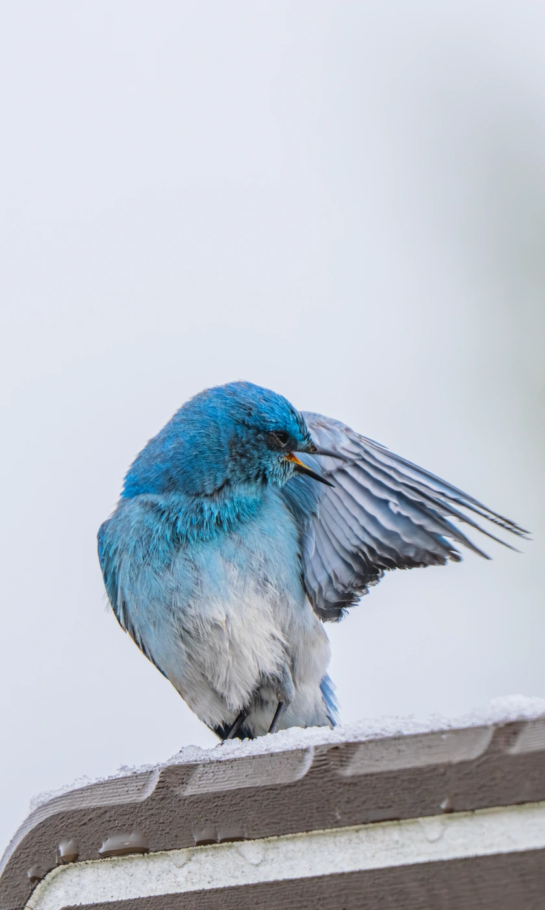
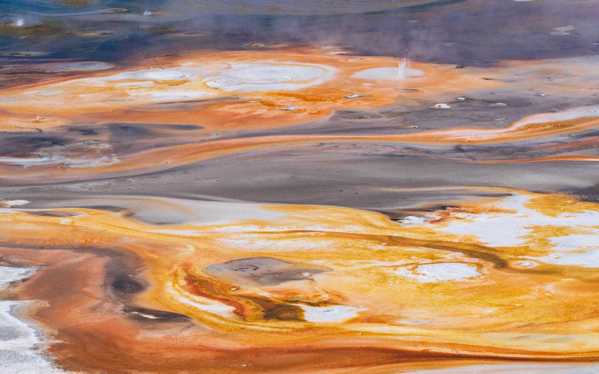
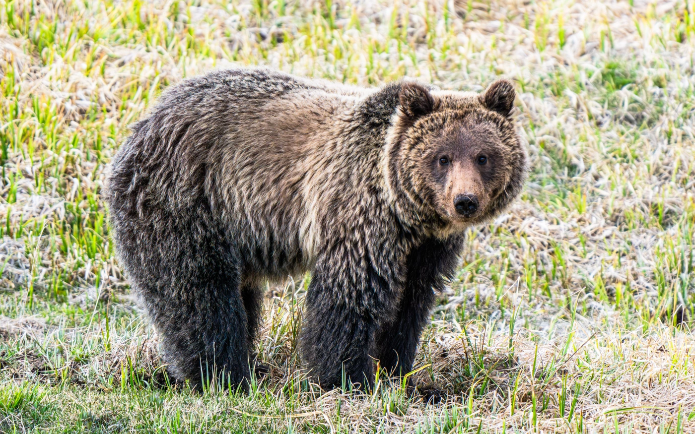

Photography
Ways of seeing.
Landscapes, wildlife, and life along the road.















Photographs by Jipeng Li.
Get in touch ↗Photography
Landscapes, wildlife, and life along the road.






Photographs by Jipeng Li.
Get in touch ↗